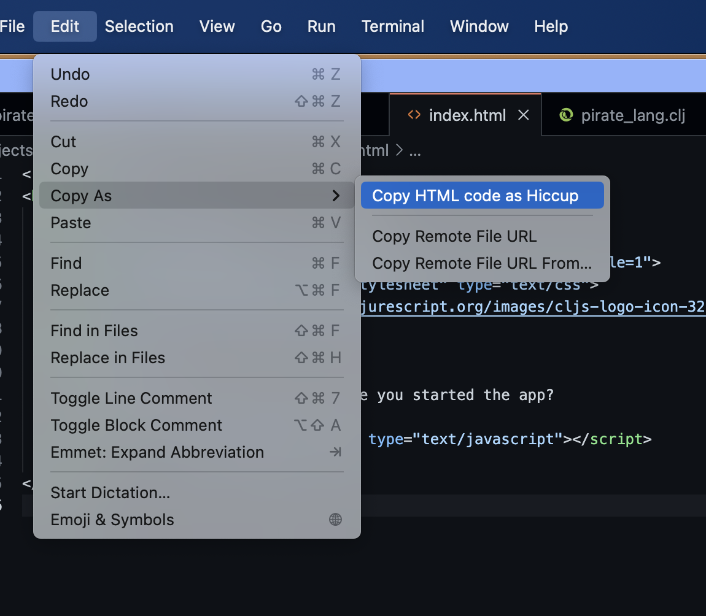

Converting HTML to Hiccup#
Calva can help you convert HTML to Hiccup.
Features#
Three commands#
- Convert HTML to Hiccup, will convert the selected text, or the entire file, to Hiccup and open up an Untitled Clojure file with the result.
- Copy HTML as Hiccup, will convert the selected text, or the entire file, to Hiccup and copy it to the clipboard.
- Paste HTML as Hiccup, will convert the contents of the clipboard to Hiccup and paste it. (The clipboard will then be restored to the original content.)
The resulting data structure is formatted with zprint using it's :style :hiccup configuration.
Conversion capabilities#
In addition to, optionally, being able to convert style attributes to maps and kebab-case attributes, the conversion:
- Opts for producing compact Hiccup:
- The
idattribute and classes are made part of the tag, CSS selector style<foo id="bar"></foo>=>[:foo#bar]<foo class="c1 c2"></foo>=>[:foo.c1.c2]<foo id="bar" class="c1 c2"></foo>=>[:foo#bar.c1.c2]
- Though, if the id or any class is not valid as part of a keyword, they remain in the props/attributes map)
<foo id='foo-[id]'></foo>=>[:foo {:id "foo-[id]"}]<foo class='clz1 clz[2]'></foo>=>[:foo.clz1 {:class ["clz[2]"]}]
- Whitespace is trimmed
<foo> \nbar\n </foo>=>[:foo "bar"]<foo> \n </foo>=>[:foo]
- The
- Handles boolean attributes
<foo disabled></foo>=>[:foo {:disabled true}]<foo disabled=disabled></foo>=>[:foo {:disabled "disabled"}]
- Special case for camelCasing attributes
viewBoxandbaseProfile(SVG is picky about it)<foo bAsePROFilE=bar viewbox="0 0 1 1"></foo>=>[:foo {:baseProfile "bar" :viewBox "0 0 1 1"}]
- Comments are retained
<foo><!-- ... --></foo>=>[:foo (comment "...")]
- You can have several top level tags
<foo></foo><foo></foo>=>[:foo]\n[:foo]
It is somewhat configurable#
The Hiccup converstion can be tweaked with two options using the setting calva.html2HiccupOptions, which is a map/object:
mapify-style: boolean, defaultfalse. Whentrueanystyleattribute will be converted to a map (Reagent supports this)kebab-attrs?: boolean, defaultfalse. Whentrueattribute names will be converted from camelCase, or snake_case/SNAKE_CASE to kebab-case. (Reagent wants most attribute names like this.)add-classes-to-tag-keyword?: boolean, defaulttrue. Whentrueall class names will be added CSS-style to the tag keyword ([:tag.clz1.clz2]), as opposed to being kept in the class attribute. Keeping the class names in the attribute may be preferable with elements having a lot of class names, such as when using Tailwind CSS.
Copy as menus: Copy HTML as Hiccup#
The Copy HTML as Hiccup command is available from VS Code's Edit menu, as well as the editor context menu, in both cases under the Copy as sub menu.

The commands take arguments#
This options map can also be provided as an argument to the commands, so you can bind keyboard shortcuts to a particular configuration for the conversion.
The command calva.convertHtml2Hiccup takes a map as an argument:
toUntitled:boolean, defaultfalse. Whenfalsethe result of the conversion will be returned to the caller (This is intended for Joyride, or some other VS Code extension). Whentrueit will behave like the default command does, placing the result of the conversion in an Untitled Clojure file.options: Same as thosecalva.html2HiccupOptionsmentioned above.
The calva.pasteHtmlAsHiccup and calva.copyHtmlAsHiccup commands takes only a calva.html2HiccupOptions map.
Example keyboard shortcuts#
The commands have no default keyboard shortcuts, you use the Command Palette to execute them, or you bind your own shortcuts. Here are some examples:
// calva.convertHtml2Hiccup
{
// With args, `"toUntitled": true` is necessary for keyboard shortcuts
// without it, the command just returns the result to the caller
"key": "ctrl+alt+c ctrl+h",
"command": "calva.convertHtml2Hiccup",
"args": {"toUntitled": true, "options": {"mapify-style?": false}}
},
{
// Only for completeness, providing the HTML is only useful from e.g. Joyride
"key": "ctrl+alt+c shift+h",
"command": "calva.convertHtml2Hiccup",
"args": {"html": "<foo style='a: b' bar='baz'>gaz<foo>", "toUntitled": true}
},
{
// Without args, the command uses the `calva.html2HiccupOptions` configuration
// And writes the results to an Untitled document
"key": "ctrl+alt+c h",
"command": "calva.convertHtml2Hiccup",
},
// calva.pasteHtmlAsHiccup
{
// Override the `calva.html2HiccupOptions` configuration
"key": "ctrl+alt+h ctrl+v",
"command": "calva.pasteHtmlAsHiccup",
"args": {"mapify-style?": true, "kebab-attrs?": true}
},
{
// Without args, the command uses the `calva.html2HiccupOptions` configuration
"key": "ctrl+alt+h v",
"command": "calva.pasteHtmlAsHiccup"
},
// calva.copyHtmlAsHiccup
{
// Override the `calva.html2HiccupOptions` configuration
"key": "ctrl+alt+h ctrl+c",
"command": "calva.copyHtmlAsHiccup",
"args": {"mapify-style?": false, "kebab-attrs?": true}
},
{
// Without args, the command uses the `calva.html2HiccupOptions` configuration
"key": "ctrl+alt+h c",
"command": "calva.copyHtmlAsHiccup"
},
The default/args-less bindings are placed last because reasons.
Using from Joyride (or some other VS Code extension)#
As with any VS Code command using these from Joyride is a matter of calling executeCommand.
calva.pasteHtmlAsHiccup and calva.pasteHtmlAsHiccup#
(-> (vscode/commands.executeCommand "calva.pasteHtmlAsHiccup"
#js {:mapify-style? true})
(.then ...))
(-> (vscode/commands.executeCommand "calva.copyHtmlAsHiccup"
#js {:mapify-style? true})
(.then ...))
calva.convertHtml2Hiccup#
Without options the command behaves just like selecting the command from the command palette. If there is a selection it will be converted, otherwise the whole file. The result will be opened in a new Untitled document.
(-> (vscode/commands.executeCommand "calva.convertHtml2Hiccup")
(.then ...))
Called with arguments it will by default return an object with a .-result member which is a string with the Hiccup.
(-> (vscode/commands.executeCommand "calva.convertHtml2Hiccup"
#js {:html "<foo class='clz1 clz2>bar</foo>"})
(.then #(println (.-result %))))
(-> (vscode/commands.executeCommand "calva.convertHtml2Hiccup"
#js {:options #js {:mapify-style? false}})
(.then #(println (.-result %))))
To make it put the text in a new Untitled document instead, provide the argument option :toUntitled true
(-> (vscode/commands.executeCommand "calva.convertHtml2Hiccup"
#js {:toUntitled true
:html "<foo class='clz1 clz2>bar</foo>"
:options #js {:mapify-style? true
:kebab-attrs? true}})
(.then ...))